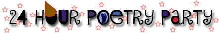

|  |
Query for KoansWe approached a number of poets and writers we liked for contributions to the LitKicks 24 Hour Poetry Party. Knowing that some might be too busy to offer entire poems, we offered an alternative: send us a poem or a koan.A koan, in Japanese or Chinese tradition, is a puzzling statement or question designed to bring about a flash of insight by its very confusing nature. We thought it would be fun to see if any original koans showed up in our mail, and in fact three did. Gary Gach, editor of "What Book!? Brom Beat to Hiphop" initially reacted to my request for koans with derision: "Koans schmoans, you already got 'em, what's a few more, they're just extra" which in fact I'm sure he intended to be a koan. He then offered "What is the metal for eternal Sunflower's 10th anniversary" as well as two pearls of wisdom. "You can't think and hit at the same time" and "A nickel ain't worth a dime anymore." Sander Hicks is one of the most interesting book publishers on the scene. The founder of Soft Skull in the 1990's, he managed to become an evening news muckraker with his publication of the explosive George W. Bush biography "Fortunate Son" and is now looking to take some more shots at the establishments of the world with his new Vox Pop/Drench Kiss venture. He offered a theological koan for the LitKicks party: "Dorothy Day said Jesus Christ came to make the rich poor and the poor holy. Express where you're at poetically with this." Finally, San Francisco slam poet Gary "Mex" Glazner offered this question: "Why do the bees bury their hive in the kitchen window beam? Why do they only buzz in the yellow of the night?" What do these koans mean? We don't know. That's because they are koans. Whether or not we have flashes of enlightenment, however, remains to be seen. We hope you like them. |
|

24 HOUR POETRY PARTY is a LitKicks Production.